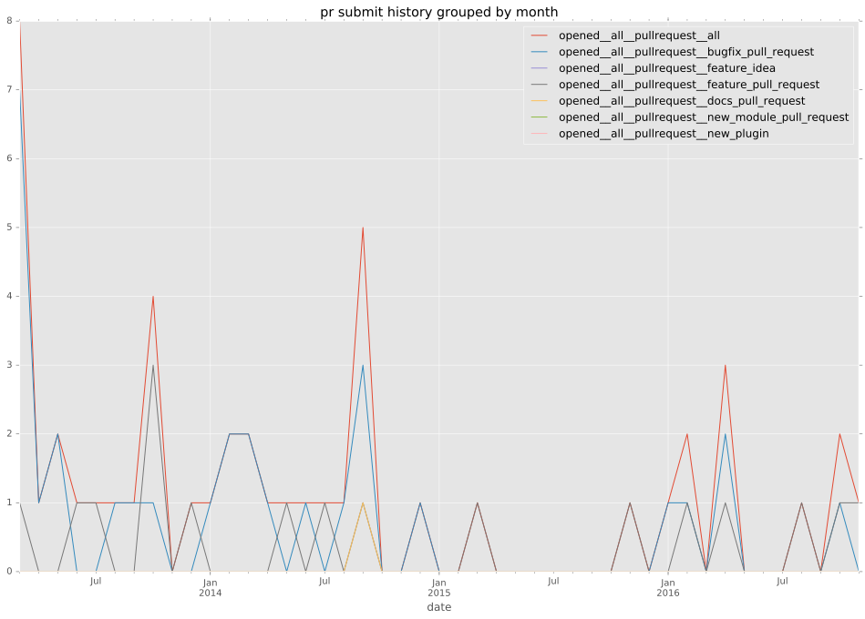
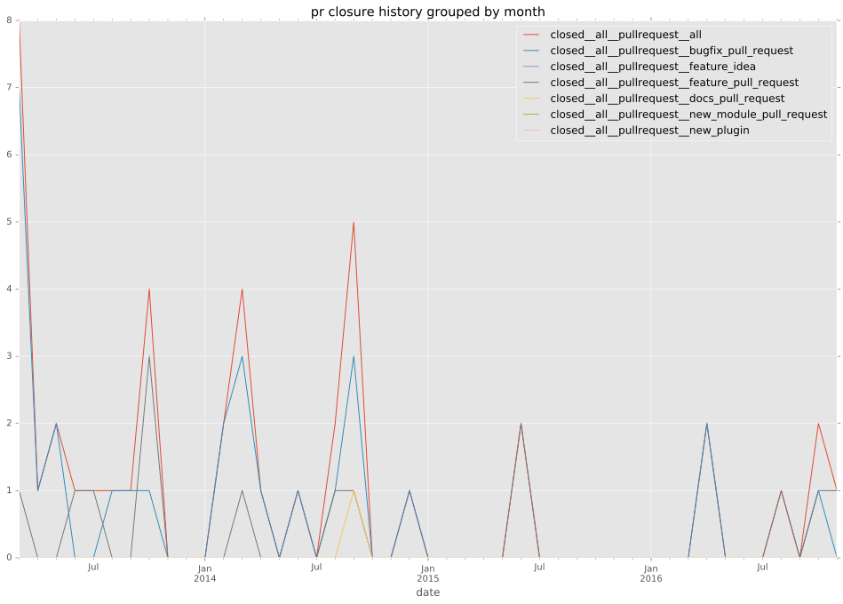
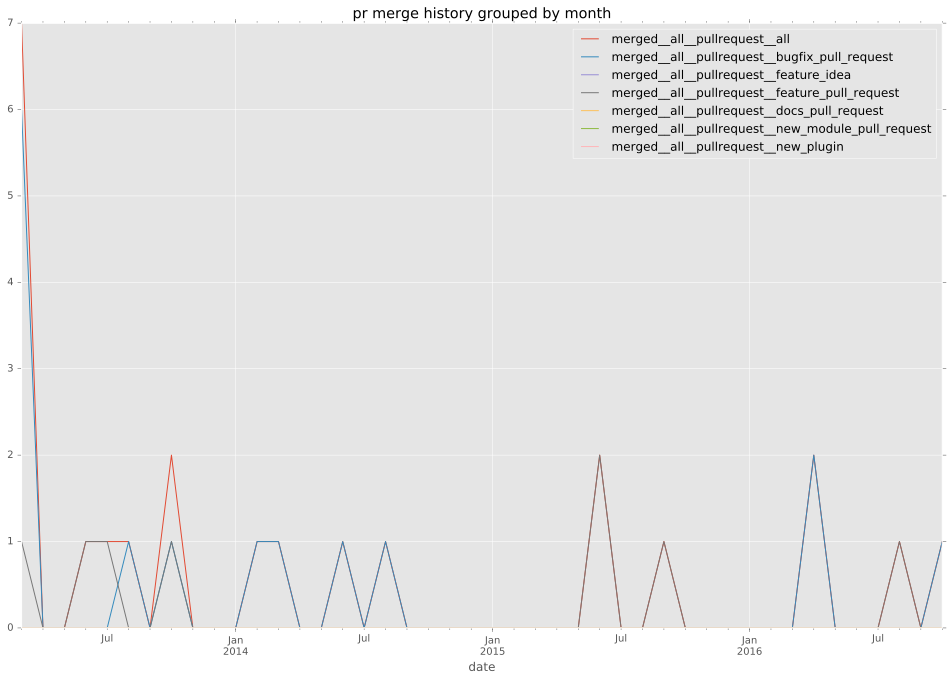

authors
maintainers
- ansible
contributors
- johanwiren : 34 commits
- mpdehaan : 30 commits
- koenpunt : 6 commits
- mremond : 5 commits
- mavimo : 5 commits
- andrew-d : 5 commits
- u2ix : 4 commits
- mtpereira : 3 commits
- jpmens : 3 commits
- gdelpierre : 3 commits
- bobzoller : 3 commits
- thataustin : 2 commits
- diko4096 : 2 commits
- az7arul : 2 commits
- mscherer : 1 commits
- laixer : 1 commits
- jocelynj : 1 commits
- jctanner : 1 commits
- ebargtuo : 1 commits
- dagwieers : 1 commits
- b6d : 1 commits
- AndydeCleyre : 1 commits
total issue counts
feature pull request: 15
pullrequest: 48
docs pull request: 1
bugfix pull request: 32
feature idea: 4
issue: 15
bug report: 11
issue history
pullrequest history



days open by issue type
bugfix pull request
count: 45
std: 9.5408213864
min: 0
max: 43
median: 0.0
mean: 3.13333333333
all
count: 75
std: 73.2315542682
min: 0
max: 267
median: 1.0
mean: 34.76
pullrequest
count: 0
std: nan
min: nan
max: nan
median: nan
mean: nan
docs pull request
count: 1
std: nan
min: 1
max: 1
median: 1.0
mean: 1.0
feature pull request
count: 21
std: 100.954751769
min: 0
max: 267
median: 19.0
mean: 75.4761904762
feature idea
count: 1
std: nan
min: 125
max: 125
median: 125.0
mean: 125.0
issue
count: 0
std: nan
min: nan
max: nan
median: nan
mean: nan
bug report
count: 7
std: 102.061139473
min: 0
max: 254
median: 139.0
mean: 107.857142857
closures grouped by total days open